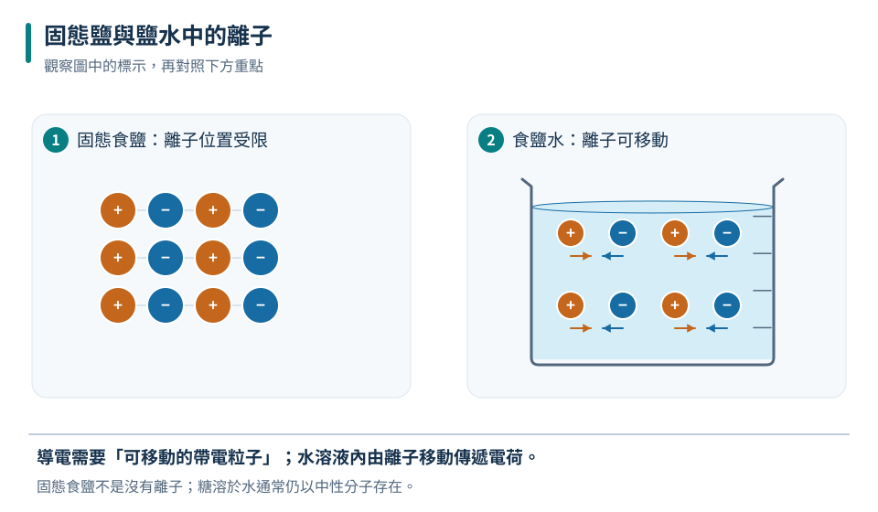
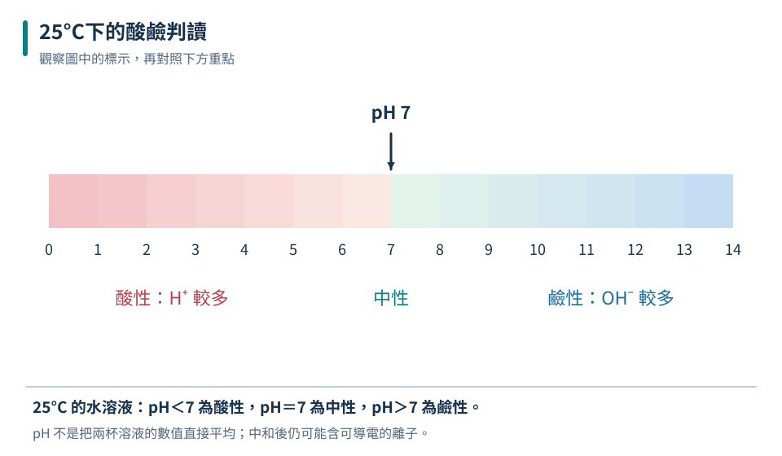
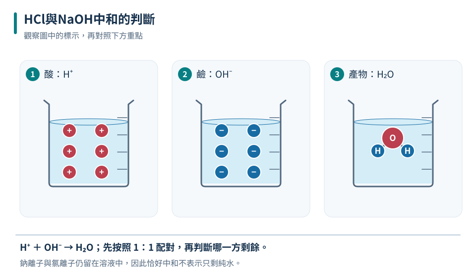

要有可移動電荷
離子存在但被固定的固態鹽，與離子可移動的鹽水，導電性不同。
八下 · 化學 · 第 3 章
清澈的液體也可能有完全不同的導電性與酸鹼性。本章用可移動離子理解電解質，用指示劑與pH比較水溶液，再追蹤酸鹼中和後的生成物與剩餘物。你會學會控制稀釋及中和實驗的條件，也知道為何不能靠試喝或觸摸辨認未知藥品。
先備概念：了解原子、離子與化合物、能用比例與質量守恆解讀反應
LEARN & EXPLAIN
電解質溶於水或熔融時，可以提供可移動離子而導電，例如氯化鈉。固態食鹽中的離子被限制在晶體位置，難以自由移動，因此固態食鹽不容易導電。食鹽水導電時主要由離子移動傳遞電荷，與金屬導線中以電子移動為主的情形不同。
糖溶於水主要以中性分子分散，不能像食鹽提供大量離子，所以糖是非電解質。純水導電性很弱，一般自來水因含溶解離子而較能導電。用燈泡比較時，亮度還受濃度、電極距離、接觸面積和電源影響；未亮不代表絕對沒有離子。
離子存在但被固定的固態鹽，與離子可移動的鹽水，導電性不同。
比較溶液要固定電源、電極材質、距離與浸入深度。

右側箭頭示意受電場影響時正負離子的反向移動，不表示沒有電場時的固定方向。
關鍵是離子能否自由移動，不是溶水後才把鈉變成金屬。
「可溶於水」不等於「電解質」；糖能溶水，卻不會提供大量離子。
LEARN & EXPLAIN
在本章的水溶液模型中，酸與氫離子有關，鹼與氫氧根離子有關。以25°C為條件，中性溶液pH＝7，酸性小於7，鹼性大於7。pH是比較酸鹼性的尺度，數字差不能當成濃度的普通倍數，也不能直接將兩個pH平均來算混合液。
藍色石蕊在酸性溶液變紅，紅色石蕊在鹼性溶液變藍；中性時兩者通常維持原色。酚酞在常見酸性、中性情況呈無色，在足夠鹼性條件呈粉紅色。指示劑有變色範圍，所以無色不必然代表中性。檢驗未知溶液要少量取樣、佩戴防護，不可品嘗或直接用手摸。
酸的強弱與電離程度相關；濃稀則描述溶液含量，不能把濃酸、強酸當同義。
在本章一般酸、鹼稀釋模型中，酸的pH上升、鹼的pH下降，但不會單靠加純水越過中性變成另一側。
| 溶液性質 | pH | 藍色石蕊 | 紅色石蕊 |
|---|---|---|---|
| 酸性 | 小於7 | 變紅 | 維持紅 |
| 中性 | 等於7 | 維持藍 | 維持紅 |
| 鹼性 | 大於7 | 維持藍 | 變藍 |

這裡使用一般國中判讀模型；實際指示劑有變色範圍。
甲的pH上升，乙的pH下降；不能只用「稀釋會讓pH上升」概括全部。
酚酞無色可能是酸性或中性，不能只憑無色就宣布中和恰好完成。
LEARN & EXPLAIN
酸與鹼可以發生中和反應。本章以HCl與NaOH為例：HCl＋NaOH→NaCl＋H₂O，氫離子與氫氧根離子結合成水，鈉離子與氯離子留在溶液中。因此中和到接近中性時，溶液仍可能導電，也不會自動變成只有水。中和常伴隨放熱，但實驗讀數仍受散熱與原料溫度影響。
酸鹼是否恰好中和取決於可反應粒子的量，不是只看體積相同。以相同濃度的HCl與NaOH而言，等體積提供相同莫耳數，才可恰好反應。鹽是化合物的一類，不只日常食鹽；鹽的水溶液可呈酸性、中性或鹼性，因此「中和會生成鹽」不表示「所有鹽水都中性」。
先用反應比例算H⁺與OH⁻各有多少，再判斷誰剩餘；不要平均pH。
NaCl水溶液有可移動離子，即使pH接近7也能導電。

此流程限定強酸HCl與強鹼NaOH的簡單模型，不把所有酸鹼混合都視為相同終點。
HCl過量，混合液仍呈酸性；另外含0.02 mol NaCl。
等體積不一定等莫耳；濃度不同時，混合等體積也可能有酸或鹼剩餘。
TRY, OBSERVE, EXPLAIN
REVIEW
離子存在但被固定的固態鹽，與離子可移動的鹽水，導電性不同。
回到這一節複習酸的強弱與電離程度相關；濃稀則描述溶液含量，不能把濃酸、強酸當同義。
回到這一節複習先用反應比例算H⁺與OH⁻各有多少，再判斷誰剩餘；不要平均pH。
回到這一節複習CHAPTER TEST
先獨立作答，再看解析。中難與難為編者估計，尚未經學生實測校準。